Забронировать
20-26 сентября 2026
Даты:
3/5
Сложность:
90 км
Расстояние:
7 дней
Продолжительность:
Авторский поход
Нагорный Дагестан.
Нигде больше на Кавказе не сохранилось так много самобытных ремесленных сёл как в регионе проведения похода. Даргинцы мастера гор, ювелиры, кузнецы, керамисты. Они создали уникальные сёла- государства, с демократическим самоуправлением, позволяющим приспосабливаться на протяжении тысячилетий к вызывам истории. Нас ждут домашние музеи и мастер классы от людей выбравших для себя путь сохранения традиций.
Наш путь начнётся с изучения села Кубачи расположенного в центре Даргинско - Кубачинского нагорья. На горизонте виднеется известниковая стена гор. Это хребет Хархалтабек высотой 2240 . Путь туда пройдет через зеленое, цветущее нагорье и займет 2.5 дня. С противоположной стороны хребта лежит теплая Акушинская долина, до горизонта покрытая террасами. Хархалтабек преграда для осадков, в долине теплее и суше чем на нагорьях. Ещё через два дня пути по горным хребтам и долинам рек мы ступим на земли Лакцев. Древнего народа Дагестана жевущего на перекрестке важных торговых путей. Путешествие завершится в селе Кумух. В прошлом столица могущественного средневекового государства, сохранившим и сейчас следы своего величия.
Подробнее
Зачем мы сюда идём.
Горы мастеров это продолжение путешествия по Кавказской тропе. . Мы идём дальше за солнцем. Новые земли, пейзажи, народы, истории и чудеса. Средняя высота сел где мы останавливаемся приближается к полутора тысяч метров Люди здесь поселились очень давно. Из Дербента вглубь гор, к богатым промышленным центрам производства оружия, брони и предметов ювелирного искуства шёл "великий путь народов". Что бы сохранить ремесленные секреты во многих сёлах был запрет на брак с представителем другого сёла. Появились народы одного села с отдельным языком и традициями. Мы идем знакомиться с островами высочайшего традиционного мастерства на фоне грандиозных пейзажей нагорного Дагестана. Наблюдать цветение жёлтых рододендронов полей и сезонный перегон баранов на летние пастбища. Есть домашний сыр и горячие пироги. Мы идем, что бы узнать что дальше, в книге историй Кавказских гор.
Особенности региона:
Дагестан - исламская республика со своим особым дресс кодом. Колени и плечи считаются зоной стыда и должны быть закрыты даже если вы в доме. При посещении мечети волосы у женщин должны быть убраны под головной убор.
Программа по дням
-
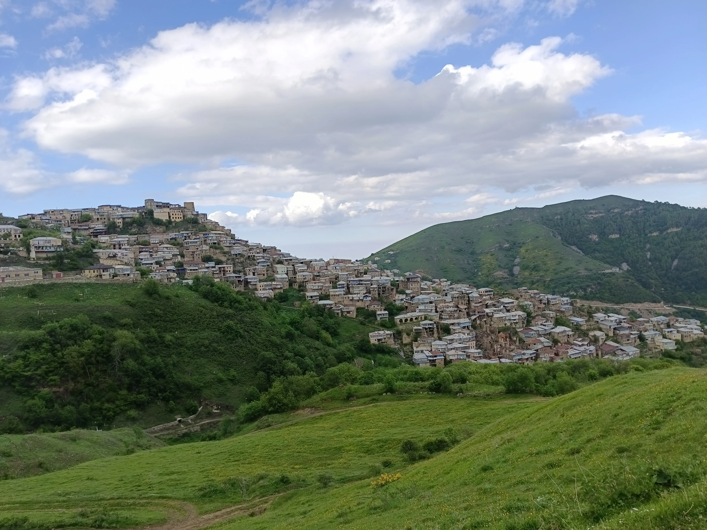
Кубачи. Встречаемся в 12 00 в аэропорту Манас г. Махачкала. Трансфер до села ювелиров Кубачи. Прогулка до села Амузги, мастер класс по работе с серебром , ужин. Ночуем в гостевом доме.
7 км 480 м 500 м 1600 м 3 ч 4 ч
-
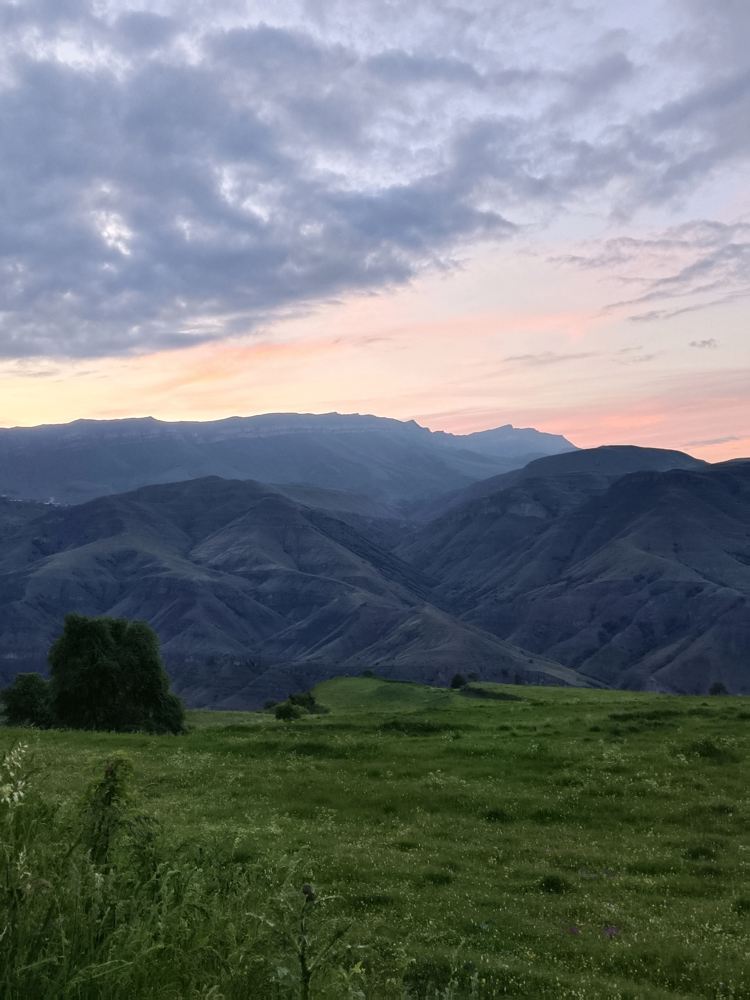
Вольное общество Сюрьха. После завтрака сходим в музей Кубачинского ювелирного комбината. Дальше путь ведёт нас по даргинскому нагорью покрытого рододендронами через три исторических села. Ночуем в селе Бакни.
12 км 600 м 750 м 7 ч
-
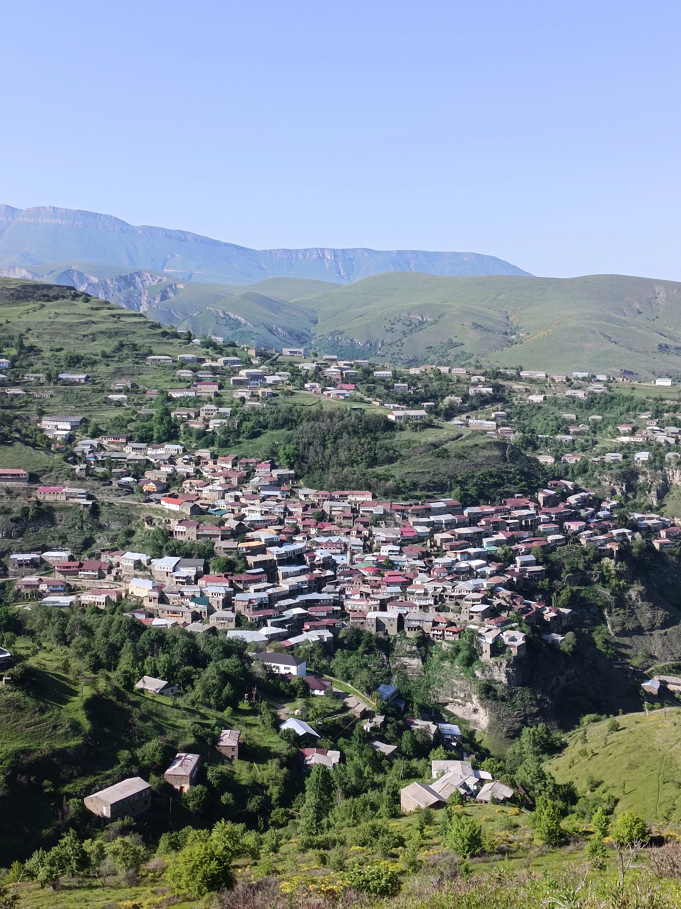
Харбук . С утра проходим брод реки Буган, выпьем чашку кофе рядом с водопадом и взойдем на Хребет Ханч, отделяющий нас от села Харбук. Село Харбук известно с 12 века как признанный центр кузнечного мастерства и изготовления оружия. Вечером нас ждёт мастер класс от легендарной "железной леди " Джавгарат , кузнеца с 50 летним стажем. Ночуем в гостевом доме .
9км 630м 745м 1400м 7ч
-
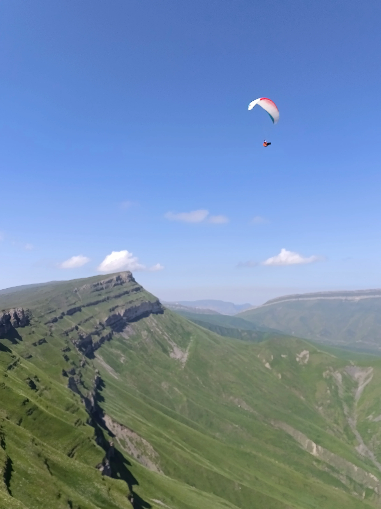
Перевал Хархалтабек. Каменная стена шестнадцать километров длинной разделяет две географические локации. Кубачинское нагорье и Акушинскую долину. Мы идем через перевал выотой 2300 м. Сверху открывается вид десятки сел разбросанных вокруг , а в ясную погоду видно Каспийское море. Спускаемся в Акушинскую долину и ночуем в гостевом доме в селе Куркимахи.
17 км 1170 м 870 м 1600 м 8 ч
-
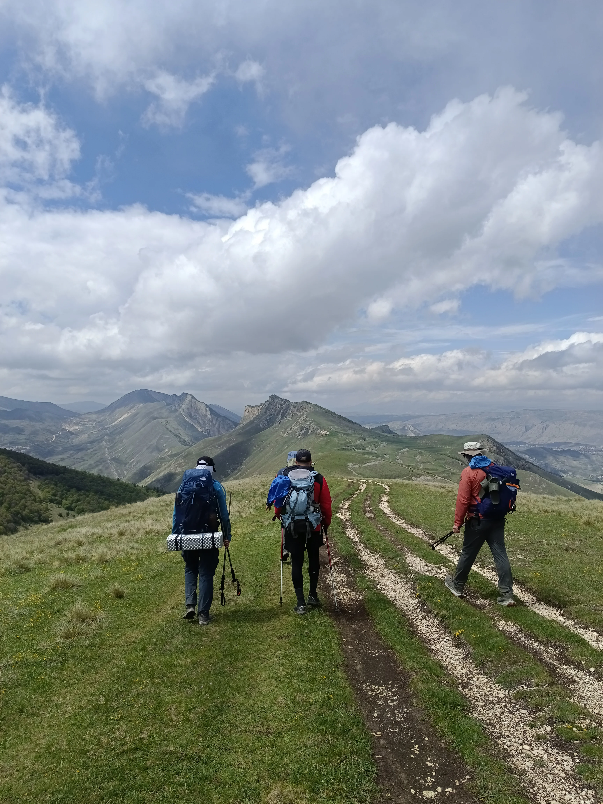
Акушинская долина. После завтрака сходим на водопад "Нос". При желании можно искупаться в прохладном природном бассейне. Сегодня в пути, панорамные виды на 360° сторожевая башня , село Крепость Уллучара и признанный центр керамики Балхар. Вечером мастер класс по изготовлению посуды. Ночуем в гостевом доме в селе Балхар.
18 км 925 м 725 м 1640 м 9 ч
-
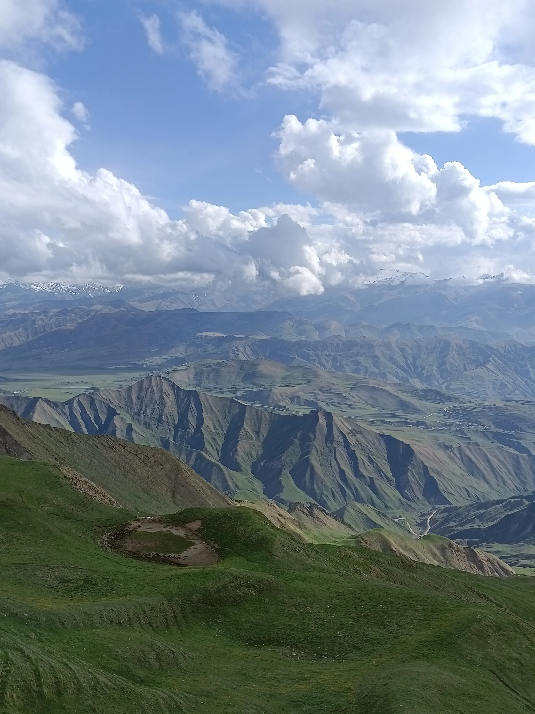
Перевал Сарибаку. Сегодня наш путь лежит через два перевала. По этой тропе два раза в год, баранов гонят на сезонные пастбища. Десятки тысяч животных образуют живое море из белых кудряшек. С перевала Сарибаку 2400 м открывается эпичный вид на хребты и горы Лакского района. Ночуем в гостевом доме в селе Иниша. Вечером можно сходить на ферму и погладить домашних животных.
16 км 820 м 950 м 1700 м 9 ч
-

Гора Вацилу Наш путь в село Кумух лежит через гору Вацила. На протяжении тысчи лет люди приходили сюда 20 марта , что бы с утра на вершине горы развести большой костёр, видимый из 40 Лакских сёл. Это был сигнал о начале нового года по Зараострийскому календарю. Традиция жива и по сей день. Наш поход завершается в селе Кумух, который в прошлом был самых крупным городом в горах Северного Кавказа.
11 км 550 м 800 м 1550 м 5 ч
Проводники

Владимир Сергиенко
Сертифицированный инструктор проводник. Два года прожил в Якутской тайге. На протяжении 4 лет принимал участие в создании Кавказской тропы. Прошёл пешком по горам Кавказа более 3500 км. Создатель пешеходной тропы Волга море.
Безопасность мой приоритет
Разведанный маршрут.
Я организую походы только в местности которую хорошо знаю сам. Всё продумано до мелочей.
Связь по рации с мобильным лагерем.
Поход всегда зарегистрирован в мчс. Знание местных жителей, способных прийти на помощь в случаи ЧС.
Поход всегда зарегистрирован в мчс.
Знание местных жителей, способных прийти на помощь в случаи ЧС.
Первая помощь
Инструктор проводник прошёл курс базовой и расширенной первой помощи в Красном Кресте.
Страховка На каждого участника оформляется страховка
Перед походом группа проходит инструктаж по технике безопасности в данном районе. Никакой" воды", только необходимая информация.
Почему стоит приехать
1 Село Кубачи обладает уникальной архитектурой.
Столица средневекового государства Зирихгеран, 6 века н.э. Известен как центр производства брони. С 19 века Кубачинцы переходят на ювелирное украшение предметов из серебра. Кубачинцы-народ одного села, до наших дней сохраняют традиционное ремесло. Украшения из серебра изготавливают в каждой семье.
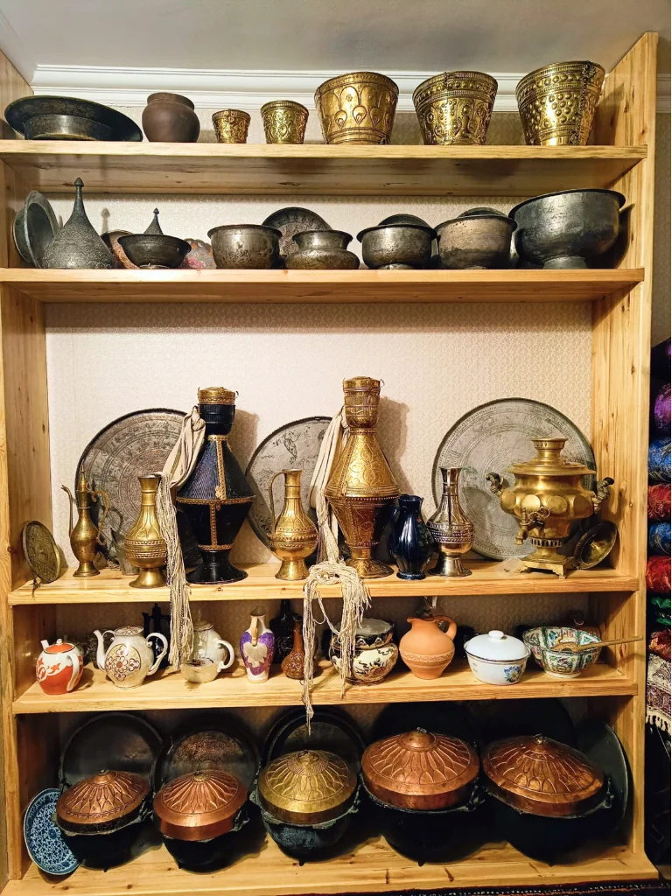
2 Село Харбух Возраст около 800 лет
250 семей кузнецов поселились на непреступеой скале, образовав самый крупный центр изготовления оружия и предметов из железа на севереом Кавказе. За всю долгую историю село ни разу не было заваёвано. Кремневые ружья 19 века и складные портативные ножи стали брендом Харбука, известным далеко за пределами Дагестана.
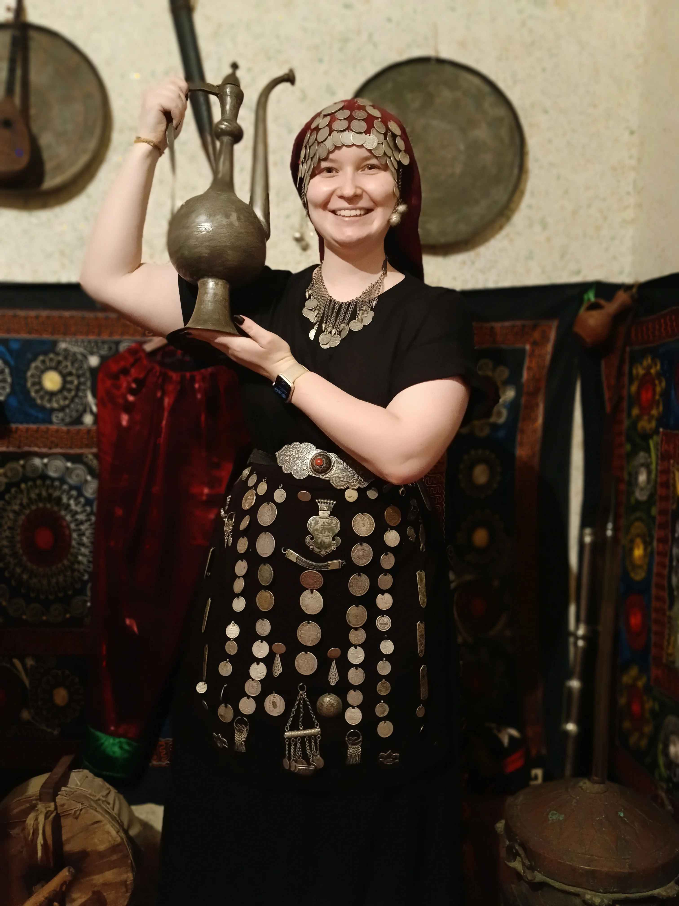
3 Хребет Хархалтабек.
Природная стена разделяющая народы, погоду и древние государства. Сверху открывается вид на 60 км на 360 °. С одной стороны зелёное бушующее "море" Даргинского нагорья. С другой стороны террасы до горизонта в тёплой Акушинской долины.
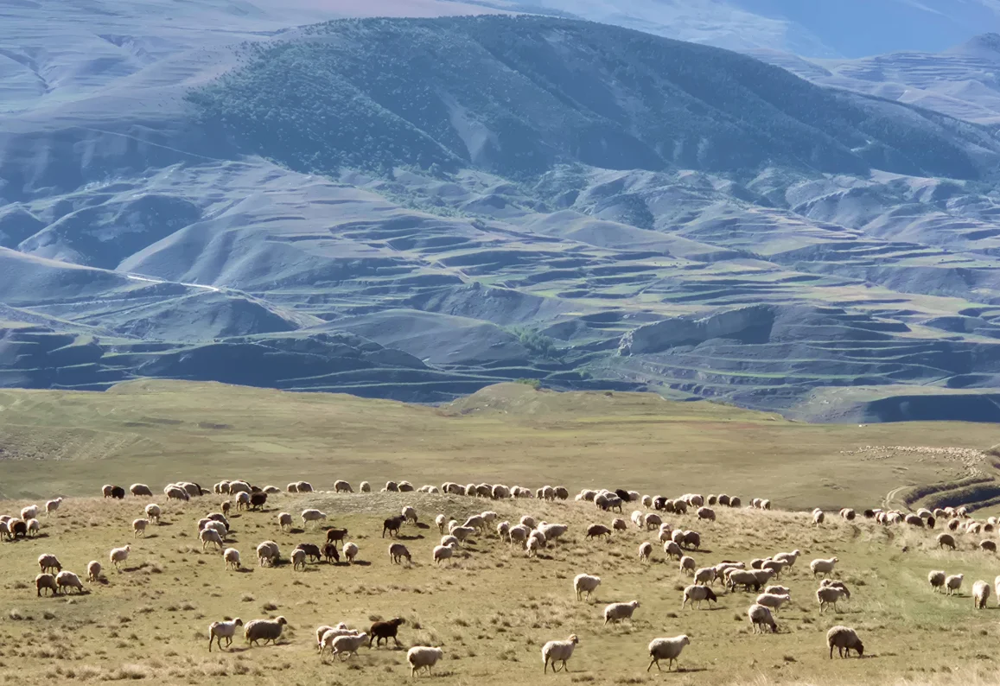
4 Мастера.
Уникальные мастер классы от последних мастеров "страны гор".
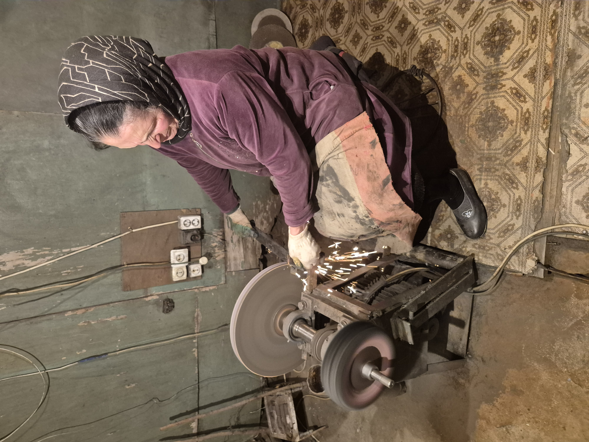
5 Летние пастибища.
Маршрут Горы мастеров пересекает дорогу по которой овец перегонют весной в горы. Караван из тысяч бариков, текущий по склон гор, незабываемое зрелище.
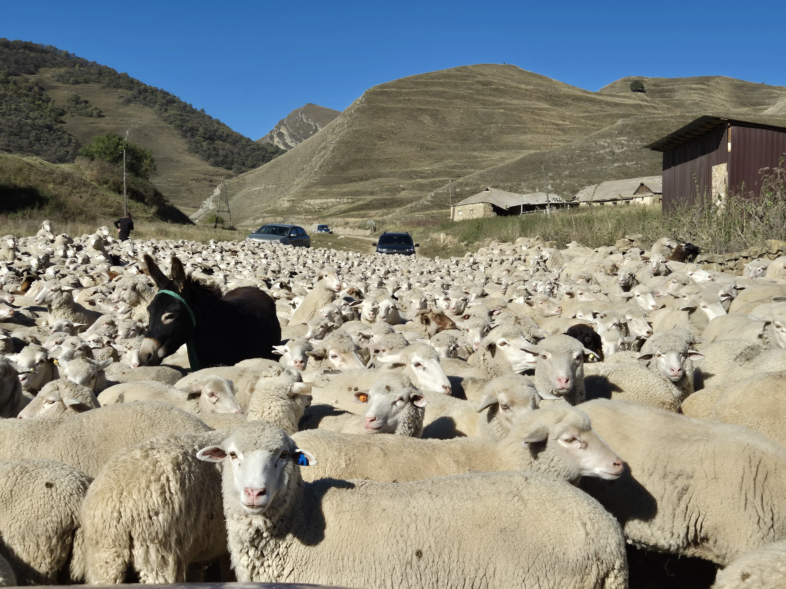
6 Гостеприимство
Если вы когда то читали о Кавказском гостеприимстве и хотите его почуствовать, то вам в Дагестан." Гость посланник Аллаха", так здесь говорят.
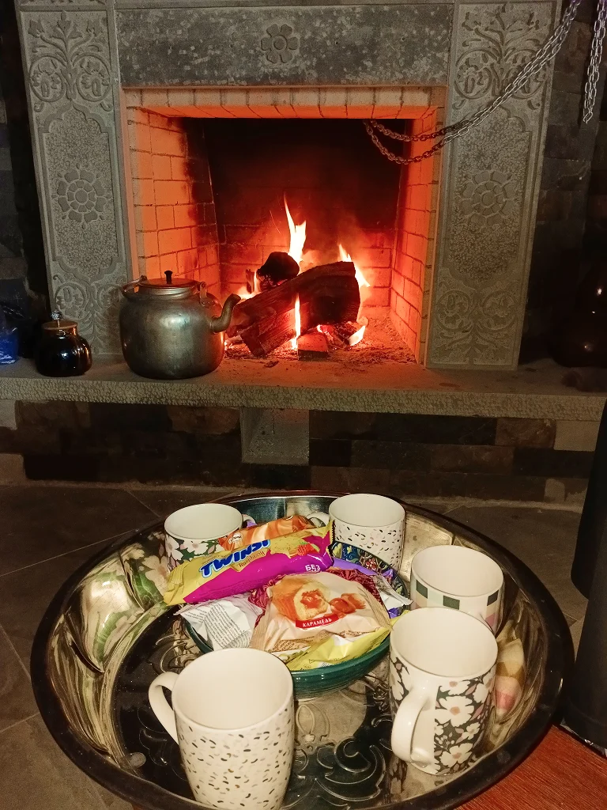
7 Перевал Сарибаку
Вид откоывающийся сверху невозможно описать словами. Лучше увидеть это самому.
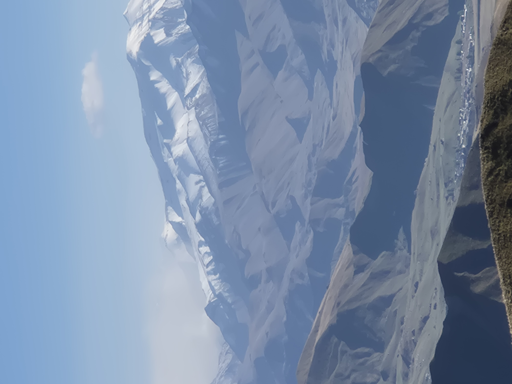
8 Село Уллучара
Село-крепость, граница могущественного государства Гази Кумух. Аул построен на гребне горы. Все дома образует единый архитектурный ансамбль, созданный быть неприступным. По легенде под селом проложены тонели.
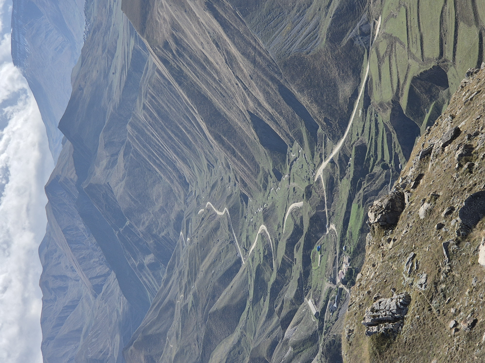
9 Село Балхар
Балха́р — звестен как центр народной художественной керамики.Местные мастера специализируются на изготовлении кувшинов, кружек, мисок и других сосудов, украшенных преимущественно белой тонкой росписью
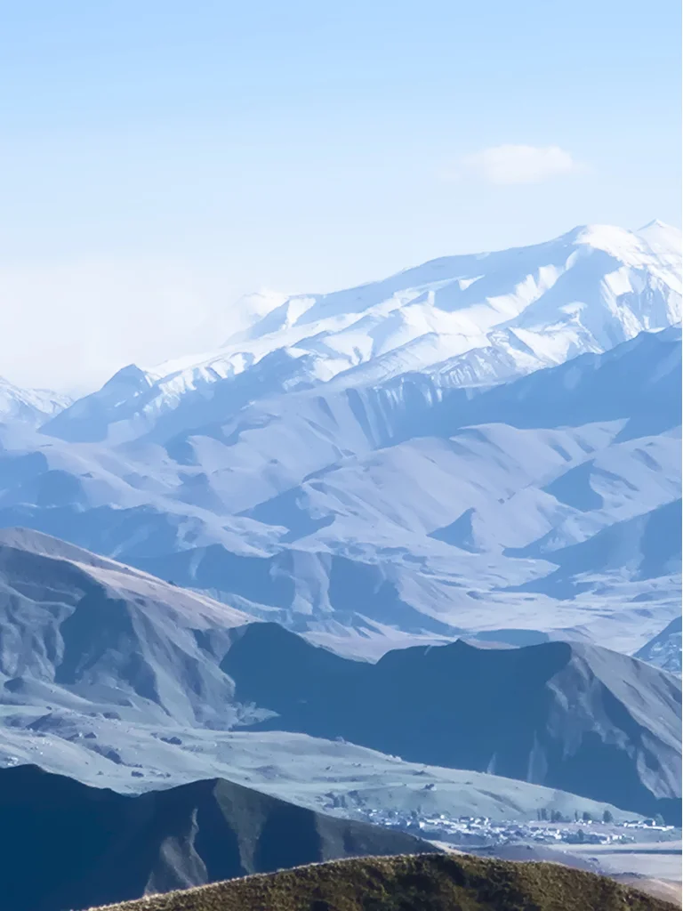
10 Гора Вацилу.
Является священной для лакцев и не смотря на ислам, в районе дня летнего солнцестояния и весеннего равноденствия они поднимаются на эту гору, кто то из почтения и босиком и совершают моления. Приносят жертвы из трапезы. На горе есть два естественных выступа через которые проходят люди во время обряда очищения.
Цена 40 000 ₽
Входит в цену
Что входит в стоимость тура:
- Трансфер из Махачкалы до села Кубачи
- Билет в музей и все мастер классы
- Трансферы на маршруте
- Проживание
- Питание
- Групповая спортивная страховка
- Сопровождение инструктором проводником
- Финальный обед в Кумухе
Не входит в цену
Что не входит в стоимость тура:
- Билеты до Махачкалы
Поход: Волга море
-
Даты:
11-19 июня 2026
-
Расстояние
73 км
-
Сложность
3/5
-
Свободные места
1/5